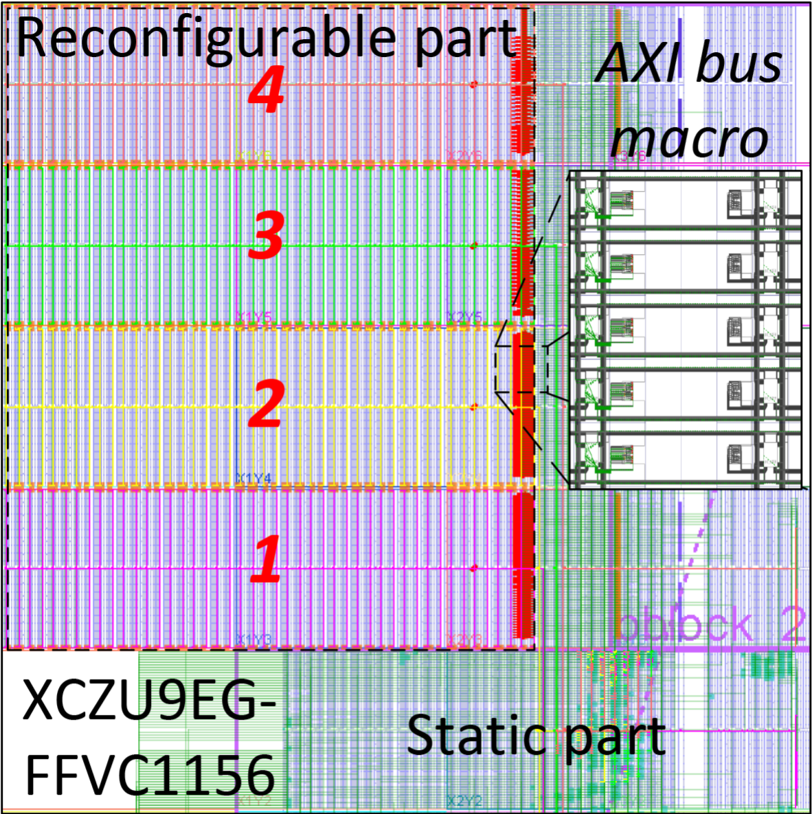

FPGAs are ideal for number crunching problems that fit dataflow processing model. With accelerator sandboxing the FPGAs provide a platform for executing these models. This platform is developed in the FOS - FPGA Operating System project.

But FPGAs have a huge surface of attack!
Remote DPA attacks
Aging with corrupted bitstreams
Power hammering attacks
For this research we have conducted a study on ring-oscillators and developed a virus scanner called FPGADefender.
rFAS Goals
Systematic review on possible FPGA attack scenarios
Develop mitigation strategies
Assessment of mitigation strategies and countermeasures
Secure multi-tenancy scenario
Publications
Anuj Vaishnav, Khoa Dang Pham, Joseph Powell, Dirk Koch:
FOS: A Modular FPGA Operating System for Dynamic Workloads. ACM Trans. Reconfigurable Technol. Syst. 13(4): 20:1-20:28 (2020)
https://dl.acm.org/doi/abs/10.1145/3405794
Khoa Dang Pham, Kyriakos Paraskevas, Anuj Vaishnav, Andrew Attwood, Malte Vesper, Dirk Koch
ZUCL 2.0: Virtualised Memory and Communication for ZYNQ UltraScale+ FPGAs FSP 2019
https://ieeexplore.ieee.org/document/8891818
Acknowledgements
This work is kindly supported by the National Cyber Security Centre of the UK through the project rFAS - reconfigurable FPGA Accelerator Sandboxing (grant agreement 4212204/RFA 15971)